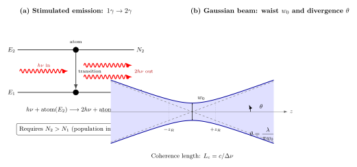

激光为什么能保持方向不散?
在上一节, 我们讲到偏振如何决定光的横向"姿态"。一束线偏振的光沿空间传播, 它的振动方向虽被约束在一个平面里, 但沿传播方向上的行为, 却还没有特别被束缚 —— 一盏普通灯源, 哪怕经过偏振片变成线偏振, 光束依旧会大角度地散开去。这一节我们要关心的, 正是光"沿着一条线传播"的能力。为什么同样是光, 激光笔射到几百米外仍几乎维持成一个亮点, 手电筒才走几米就糊成一大片? 这一"不散"到底从何而来?
直觉上我们会说: 激光"很直"。但物理上这不是把灯泡做小、把反射镜做精就能实现的 —— 无论你把手电筒做得多么工整, 普通灯泡发出的光天然就是"各自为政"的, 每个原子何时发光、发什么颜色、朝哪个方向、带什么相位, 都互不相干。光强是 N 个光子的算术叠加, 而不是 N 个波的同相叠加。要得到像激光那样能在空间维持数十米、数百米不散的光束, 必须从根本上改变光的"出身": 让所有光子不再是一群乌合之众, 而是一支步调一致的军队。
这里的核心物理, 早在 1917 年 Einstein 研究黑体辐射平衡时就已经写好了半个世纪的伏笔。那个夹在量子力学正式诞生之前的年份, 他为了让 Planck 公式自洽地从原子跃迁推出, 引入了"受激辐射"这一原本并不存在于经典图像中的过程。直到 1960 年, Maiman 把红宝石放入强闪光灯泡包围的谐振腔, 得到第一束人造激光 —— Einstein 等了 43 年的预言才变成书架上可触摸的红色光束。
一、受激辐射: 一个光子变成两个同模光子
想理解激光, 要先理解原子与光相互作用的三种基本方式。设原子有两个能级 $E_1$ (基态) 和 $E_2$ (激发态), 能级差 $h\nu = E_2 - E_1$ 恰好对应一个光子的能量。Einstein 在 1917 年写下了这三个过程的速率:
- 自发辐射 (spontaneous emission): 激发态原子在没有外部提示的情况下, 自行跃迁回基态并发射一个光子。速率正比于 $N_2$, 系数记作 $A_{21}$。关键是 —— 这个光子的发射方向是随机的, 相位也是随机的。
- 受激吸收 (stimulated absorption): 基态原子吸收一个入射光子, 跃迁到激发态。速率正比于 $N_1$ 与入射光能量密度 $\rho(\nu)$, 系数 $B_{12}$。
- 受激辐射 (stimulated emission): 这是 Einstein 真正新引入的概念。一个光子撞到激发态原子上, 触发它跃迁回基态并释放一个光子; 关键在于, 这个被触发出来的光子与入射光子严格同频、同相、同传播方向、同偏振 —— 它们处在完全相同的量子模式里。速率正比于 $N_2$ 与 $\rho(\nu)$, 系数 $B_{21}$。
用记号写出这个"一变二"的过程:
$$h\nu + \mathrm{atom}(E_2) \longrightarrow 2h\nu + \mathrm{atom}(E_1)\tag{1}$$
注意公式 (1) 左边只有一个光子, 右边有两个; 且这两个光子是"克隆"的 —— 这正是激光 (Light Amplification by Stimulated Emission of Radiation) 名字里那个 Amplification 的来源: 一个光子进去, 两个光子出来, 而且这两个光子合成后的电磁场不是能量翻倍, 而是振幅翻倍 —— 振幅翻倍意味着光强变为原来的四倍, 只不过两个光子所在的模式体积也变为相应的份额, 整体能量守恒。相干性, 就是这个"克隆"过程的全部奥秘。
Einstein 通过黑体辐射的热平衡条件, 证明了三个系数满足关系 $B_{12}=B_{21}$ 以及 $A_{21}/B_{21}=8\pi h\nu^3/c^3$。前一个等式告诉我们: 在同一能量密度下, 受激吸收与受激辐射的速率比等于粒子数比 $N_1:N_2$。如果 $N_1>N_2$, 入射光被吸收的多于被放大的; 要让光被放大, 必须反过来 —— $N_2>N_1$, 即"粒子数反转"。
粒子数反转听起来平常, 但在热平衡下是根本不可能发生的。Boltzmann 分布告诉我们 $N_2/N_1=\exp(-h\nu/k_B T)$, 对可见光能级差 $h\nu\approx 2$ eV, 即便在 $T=10^4$ K 这样的高温下, $N_2/N_1\approx e^{-2.3}\approx 0.1$, 激发态永远少于基态。要强行让 $N_2>N_1$, 必须外界给系统"泵浦" —— 用强光、电流、化学反应、甚至另一束激光 —— 把大量原子先抽到更高的辅助能级, 再让它们通过无辐射过程掉到 $E_2$ 上积累, 从而形成 $N_2>N_1$。这是现代激光器的共同心脏: 一个工作物质, 一个泵浦源, 一个反馈腔 (通常是两片高反射率的镜子). 反馈腔让同一束光在工作物质里反复来回, 每一次来回都靠受激辐射被放大 —— 光数逐次翻倍, 最终输出一束惊人纯净的光。
二、高斯光束与衍射极限下的发散角
即便让每个光子都处在同一量子模式里, 激光也并不是"严格的几何直线"。这是波动光学对我们的底线提醒 —— 任何有限口径的光束, 在传播中都要受衍射支配。对激光器输出的横向模, 最简单也最常见的就是基模高斯光束: 其横向电场振幅呈高斯分布, 光强沿半径有形式 $I(r)=I_0\exp(-2r^2/w^2)$, 其中 $w$ 是当前位置的光斑半径。
把轴向坐标 $z$ 定到焦点 (即光束最细处, 叫束腰, 半径 $w_0$), 高斯光束的光斑半径随 $z$ 变化为
$$w(z)=w_0\sqrt{1+\left(\frac{z}{z_R}\right)^2},\qquad z_R=\frac{\pi w_0^2}{\lambda}\tag{2}$$
其中 $z_R$ 叫瑞利长度, 是束腰附近几乎不散开的范围 —— 在 $z=z_R$ 处光斑直径恰好是束腰的 $\sqrt{2}$ 倍。当 $z\gg z_R$, 即远场, 公式 (2) 简化为 $w(z)\approx w_0 z/z_R=\lambda z/(\pi w_0)$, 光束以一个固定的半发散角线性扩张:
$$\theta=\lim_{z\to\infty}\frac{w(z)}{z}=\frac{\lambda}{\pi w_0}\tag{3}$$
公式 (3) 是本节最重要的一条。它告诉我们: 发散角由波长与束腰两件事共同决定, 束腰越粗, 发散越小 —— 这一点乍看反常识 (粗的束不是应该"更散"吗?), 但衍射的逻辑正相反: 束腰越宽, 相当于横向动量的不确定性越小, 由 $\Delta p_\perp\sim\hbar/w_0$ 可知远场张角 $\theta\sim\Delta p_\perp/p=\lambda/(2\pi w_0)$, 与公式 (3) 在量级上一致。
值得强调的一点是, 公式 (3) 是"衍射极限"发散 —— 它对应的是理想高斯模, 只在光束空间相干性足够好时才能取到。一束没有空间相干性的光 (比如普通灯泡的光) 不能被视作单一的高斯模, 它要按多模非相干地叠加, 实际发散远大于 $\lambda/(\pi w_0)$, 几乎是"想往哪散往哪散"。激光恰恰是把整束光约束到单一的空间模式里, 才把发散推到衍射极限这一理论下界。

三、数值代入: 激光笔与手电筒的三个数量级之差
把公式 (3) 应用到实物上, 立刻能得到触目的对比。先看红色激光笔: 典型参数 $\lambda=650$ nm $=6.5\times 10^{-7}$ m, 出射束腰 $w_0\approx 1$ mm $=10^{-3}$ m (取出射孔的高斯等效半径)。代入:
$$\theta_{\text{laser}}=\frac{\lambda}{\pi w_0}=\frac{6.5\times 10^{-7}}{\pi\times 10^{-3}}\approx 2.1\times 10^{-4}\ \mathrm{rad}\approx 0.21\ \mathrm{mrad}.$$
也就是约 0.012°。射到 1 km 外, 光斑半径 $w(1\,\text{km})\approx \theta\cdot z=2.1\times 10^{-4}\times 10^3=0.21$ m, 直径约 0.42 m —— 一枚成年人的头般大。这解释了为什么激光笔射到对面山头上还能看到一个明显的亮斑。
再看普通手电筒。乍一想, 手电筒的 LED 灯珠加上反射碗杯的"束腰"可达 $w_0\approx 5$ cm $=5\times 10^{-2}$ m, 比激光笔还宽 50 倍, 按公式 (3) 应该更不散才对。但这里有个致命问题 —— 手电筒的光是非相干的, 不是一束单一的高斯模, 而是由数千万个空间模式拼起来的叠加。灯珠发光面的每一小块独立发射, 彼此互不相干, 波前是高度扭曲的。这样的光束不受 $\theta=\lambda/(\pi w_0)$ 这一衍射极限约束, 实际发散角由几何光学里反射碗杯的孔径角决定, 典型在 10°—30° 之间, 即 $\theta_{\text{flashlight}}\approx 0.3$ rad。
这意味着手电筒只走 10 米, 光斑直径就扩大到约 $2\times 0.3\times 10=6$ m, 早已弥漫成一片; 走到 100 米, 光强就稀释到几乎看不出"有光在那里"。对比:
$$\frac{\theta_{\text{flashlight}}}{\theta_{\text{laser}}}\approx\frac{0.3}{2.1\times 10^{-4}}\approx 1.4\times 10^{3}.$$
三个数量级 —— 这就是"相干"与"不相干"在宏观上的差距。它不是你灯做得精不精、反射镜打磨得亮不亮的差别, 而是"光子处不处在同一量子模式"这一底层区别在远场的放大。
顺便提一下, 如果我们把手电筒想象得极端理想 —— 假设某种科幻手电, 光子全部非相干但方向上限制在 $\pm 5°$ 内, 那它射到 1 km 外光斑直径也有 175 m, 仍是激光笔的四百倍。这说明只要光是非相干的, 光学设计再精, 也无法突破这一相干性天花板。要让光射远而不散, 没有捷径, 只能让光子们真正"站在一起"。
四、单色极限、相干长度与激光的极限姿态
激光的第三个特征 —— 也是常被科普里一带而过的 —— 是单色性, 即它的频谱宽度 $\Delta\nu$ 极窄。但如果继续往底层问, "绝对单色"可能吗? 这里有一个思想极限: 完全单色等价于频谱是一条数学上的 Dirac 函数 $\delta(\nu-\nu_0)$, 对应到时域就是一个持续无限久、振幅恒定的余弦波。而无限久的波在物理上是不可能的 —— 任何激光都有开与关, 任何原子跃迁都有有限寿命, 任何谐振腔都有有限 Q 值。傅里叶的不等式在这里是铁律:
$$\Delta\nu\cdot\Delta t\gtrsim\frac{1}{4\pi}.$$
所以激光永远有一个最小的频宽。把时间 × 频谱宽换成空间 × 相干性, 就得到了相干长度的定义:
$$L_c=\frac{c}{\Delta\nu}.$$
相干长度描述的是: 从光束中某一点取两个相隔 $L$ 的波前, 它们之间是否还维持固定的相位关系。在 $L 这不是理论游戏 —— LIGO 引力波探测器的干涉臂长 4 km, 每次测量要求光束往返几百次, 有效光程十几万公里, 也就是说 LIGO 用的激光必须有能跨越这个长度的相干性。核聚变点火装置 NIF 则是另一个极端需求: 192 束高功率激光必须在时间上对齐到皮秒精度, 空间上对齐到百微米精度, 同时聚焦到一颗几毫米的靶丸上 —— 不相干的光, 无法对齐, 也无法聚焦, 更无法点火。 相干性有两个维度。时间相干性由相干长度 $L_c$ 描述, 对应频谱的单色程度; 空间相干性由束腰与波前描述, 对应公式 (3) 的发散角。两者共同构成"激光"这一身份认同 —— 非相干的光本质上是熵更大的光 (每个光子处在独立模式, 信息互不关联), 激光则是低熵的光 (所有光子处在同一模式, 信息高度关联)。这让激光成为了现代物理的"瑞士军刀": 光通信把每一段相干时间用于编码一个比特; 条码扫描用它做毫米级空间分辨; 医疗切割用它把能量聚焦到微米级焦点烧断组织; LIGO 用它把 $10^{-18}$ m 的臂长变化转化为可测的相位差; NIF 用它把 2 MJ 能量压进 $1\ \mathrm{mm}^3$ 体积 —— 几乎所有靠光做精密事情的领域, 激光都是必须的工具。 回到历史那一幕: 1960 年 5 月 16 日, Maiman 在加州 Hughes 研究实验室按下闪光灯泵浦开关, 红宝石晶体中的铬离子被激发到高能级, 接着靠受激辐射输出第一束 694.3 nm 的红色相干光脉冲。Einstein 1917 年那个冷冰冰的 $B_{21}$ 系数, 在 43 年后终于点亮了人类的第一束"人造的太阳光" —— 不, 比太阳光更纯粹: 太阳光是典型的非相干热辐射, 激光则是相干的、低熵的、沿着一条空间模式传播的新型光。 这一节我们回答了"激光为什么不散"这一问题。从 Einstein 1917 年的受激辐射开始, 我们看到光子可以通过激发态原子被"克隆"成同频、同相、同方向的孪生光子; 粒子数反转条件 $N_2>N_1$ 是这一放大机制的必要前提, 由此诞生了激光器的三要素 —— 工作物质、泵浦源与谐振腔。然后我们把激光视作高斯光束, 用衍射极限得到发散角 $\theta=\lambda/(\pi w_0)$, 代入激光笔参数算出 0.21 mrad 的张角, 对比普通手电筒 300 mrad 的几何张角, 看出相干性在远场放大为三个数量级的差异。最后我们把单色性推到极限 —— 绝对单色等价于无限相干时间, 物理上不可能 —— 定义相干长度 $L_c=c/\Delta\nu$, 看到 HeNe 激光的 20 cm 如何在稳定化之后扩展到千米级, 从而支撑起 LIGO 与 NIF 这类极限物理装置。在"光是什么"的大问题上, 激光的贡献, 是第一次让人类拥有了一束可以被"量子模式"这四个字严格描述的光 —— 所有光子处在同一模式, 没有熵, 没有散乱, 只有一个波函数。下一节我们将借助激光这样一束纯净的光, 重新回到一个古老的命题: 光的速度到底怎样被精确测量? ▲小结